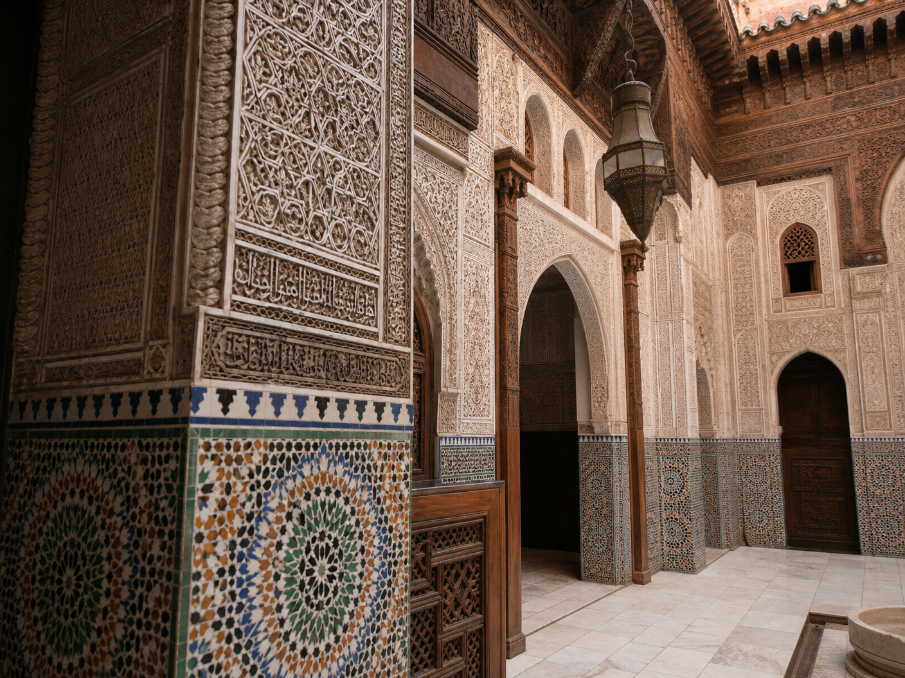

A Guide to Fes Medina
Navigate the world's largest car-free urban zone with our expert tips on the best souks, restaurants, and hidden corners.

Fes el-Bali, the ancient walled city of Fes, is the world's largest car-free urban zone and a UNESCO World Heritage site. This labyrinthine medina dates back to the 9th century and remains one of Morocco's most authentic and culturally rich destinations.
Getting Oriented in Fes Medina
The medina can be overwhelming for first-time visitors. We recommend hiring a local guide for at least your first day to learn the layout and discover hidden gems you might otherwise miss. The medina is divided into several quarters, each with its own character and specialties.
Must-Visit Sites in Fes Medina
Al-Qarawiyyin University
Founded in 859 AD, this is the oldest continuously operating university in the world. While non-Muslims cannot enter the prayer hall, the surrounding area offers fascinating insights into Islamic scholarship and architecture.
Bou Inania Madrasa
This 14th-century theological college is a masterpiece of Marinid architecture, featuring intricate zellige tilework, carved cedar, and beautiful calligraphy. Non-Muslims can visit and admire the stunning courtyard.
Chouara Tannery
The famous tanneries have operated using the same methods for centuries. Watch artisans process leather using natural dyes in large pits filled with colorful solutions. The view from surrounding terraces is iconic.
Best Souks to Explore
Attarine Souk
Specializing in spices, perfumes, and traditional medicines, this souk offers an aromatic journey through Moroccan culinary traditions. Look for saffron, cumin, ras el hanout spice blends, and traditional beauty products.
Henna Souk
Find natural henna, traditional cosmetics, and beauty products. This is also where locals purchase ingredients for traditional hammam treatments.
Seffarine Square
The heart of the metalworking district, where craftsmen create brass, copper, and silver items. The sound of hammering metal fills the air, creating a unique atmosphere.
Where to Eat in Fes Medina
Restaurant Clock
Located in a restored 19th-century palace, this restaurant offers traditional Moroccan cuisine in a stunning setting. Try their pastilla and lamb tagine.
Café Clock
A popular meeting spot for locals and travelers alike, offering a relaxed atmosphere, good coffee, and a menu that bridges Moroccan and international cuisine.
Street Food
Don't miss the opportunity to try street food like snail soup, fresh squeezed orange juice, and msemen (Moroccan pancakes) from local vendors.
Hidden Gems and Local Tips
Rooftop Terraces
Many riads and restaurants offer rooftop terraces with panoramic views of the medina. These are perfect for watching sunset over the city.
Traditional Crafts Workshops
Visit workshops where artisans practice centuries-old crafts like pottery, weaving, and metalworking. Many welcome visitors and demonstrate their techniques.
Neighborhood Bakeries
Watch locals bring their dough to communal wood-fired ovens. Some bakeries welcome visitors and will show you the traditional bread-making process.
Practical Tips for Visiting Fes Medina
- Wear comfortable walking shoes with good grip
- Carry cash, as many shops don't accept cards
- Download offline maps as GPS doesn't work well in the medina
- Bring a small flashlight for navigating narrow streets at night
- Respect local customs and dress modestly
- Bargain politely in souks, but remember that prices are often fair
Experience Fes with Find Your Morocco
Our private tours include expert local guides who know the medina intimately. We'll ensure you experience the best of Fes while avoiding tourist traps, with private transportation and luxury accommodation arranged for your comfort.